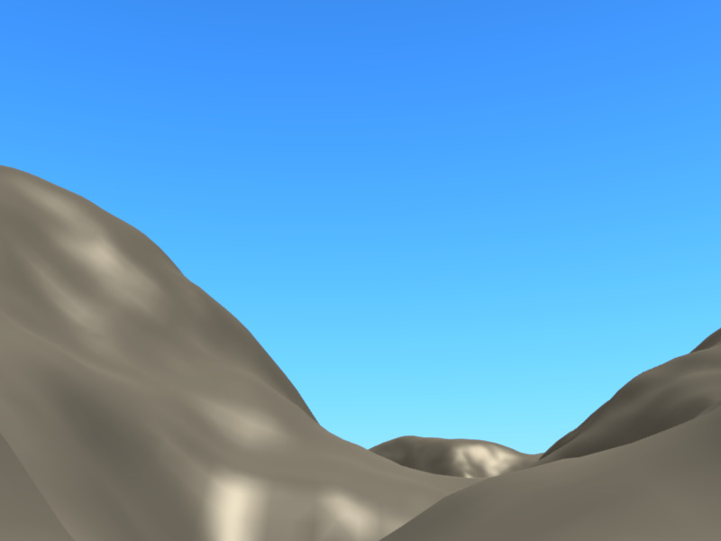
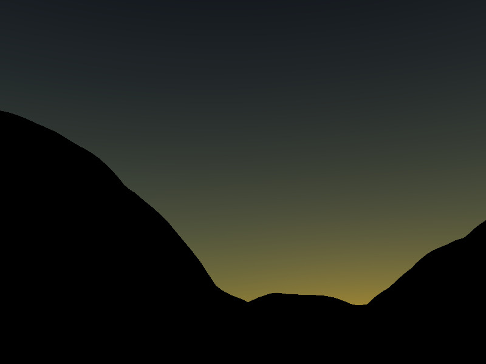
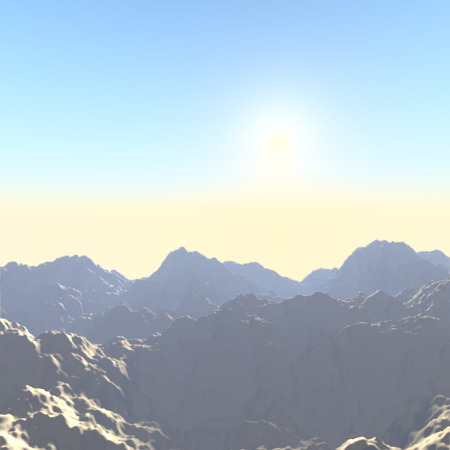
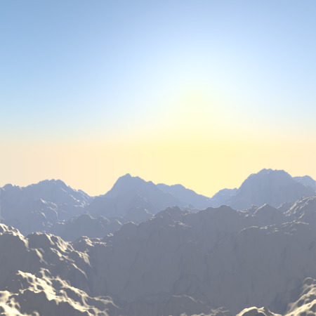
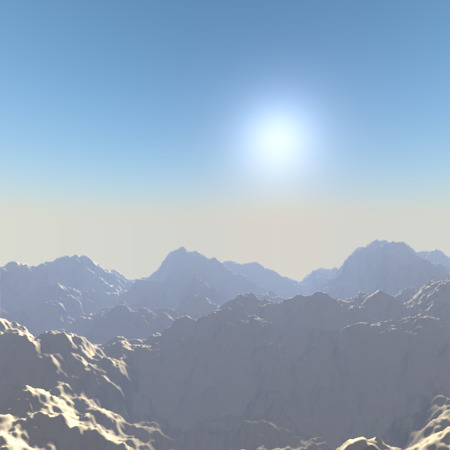
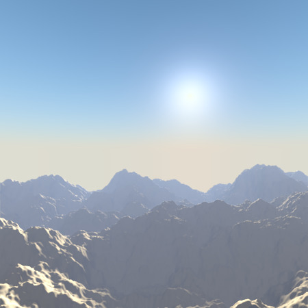

Sky & Atmosphere¶

Sky & Atmosphere panel.
This panel allows you to enable an effect that simulates various properties of real sky and atmosphere: the scattering of sunlight as it crosses the kilometers of air overhead. For example, when the Sun is high, the sky is blue (and the horizon, somewhat whitish). When the Sun is near the horizon, the sky is dark blue/purple, and the horizon turns orange. The dispersion of the atmosphere is also more visible when it is a bit foggy: the farther away an object is, the more "faded" in light gray it is... Go out into the countryside on a nice hot day, and you will see.
To enable this effect, you have to use a Sun light source. If, as usual, the position of the lamp has no importance, its rotation is crucial: it determines which hour it is. As a starting point, you should reset rotation of your Sun (with Alt-R, or typing 0 in each of the three Rotation fields X, Y, Z in the Transform panel). This way, you will have a nice mid-day sun (in the tropics).
Now, there are two important angles for the Sky/Atmosphere effect: the "incidence" angle (between the light direction and the XY plane), which determines the "hour" of the day (as you might expect, the default rotation -- straight down -- is "mid-day", a light pointing straight up is "midnight", and so on...). And the rotation around the Z axis determines the position of the sun around the camera.
{kind=link}
The dashed "light line" of the Sun lamp crossing the camera focal point.
In fact, to have a good idea of where the sun is in your world, relative to the camera in your 3D View, you should always try to have the dashed "light line" of the lamp crossing the center of the camera (its "focal" point), as shown in (The dashed "light line" of the Sun lamp crossing the camera focal point). This way, in camera view (Numpad0, center area in the example picture), you will see where the "virtual" sun created by this effect will be.
It is important to understand that the position of the sun has no importance for the effect: only its orientation is relevant. The position just might help you in your scene design.
Options¶
- Sun & Sky Presets
- Classic
- Desert
- Mountain
Sky¶
- Sky
- This button enables the sky settings: it will create a "sky", with a "sun" if visible, and mix it with the background as defined in World settings.
- Turbidity
- This is a general parameter that affects sun view, sky and atmosphere; it is an atmosphere parameter where low values describe clear sky, and high values shows more foggy sky. In general, low values give a clear, deep blue sky, with "little" sun; high values give a more reddish sky, with a big halo around the sun. Note that this parameter is one which can really modify the "intensity" of the sun lighting. See examples below.
Here are its specific controls:
- Blending
The select menu shows various mix methods. The one selected will be used to blend the sky and sun with the background defined in the World settings. The mixing methods are the same as described e.g. in the Mix Compositing Node page.
- Factor
- Controls how much the sky and sun effect is applied to the World background.
- Color space
These buttons allows you to select which color space the effect uses, with the following choices:
- CIE
- REC709
- SMPTE
- Exposure
This number button allows you to modify the exposure of the rendered Sky and Sun (0.0 for no correction).
- Horizon
- Brightness
- Controls brightness of colors at the horizon. Its value should be in the range (0.0 to 10.0); values near zero means no horizontal brightness, and large values for this parameter increase horizon brightness. See examples below.
- Spread
- Controls spread of light at the horizon. Its value should be in the range (0.0 to 10.0); values low in the range result in less spread of light at horizon, and values high in the range result in horizon light spread in through all the sky.
- Sun
- Brightness
- Controls the sun brightness. Its value should be in the range (0.0 to 10.0); with low values the sky has no sun and with high values the sky only has sun.
- Size
- Controls the size of sun. Its values should be in the range (0.0 to 10.0), but note that low values result in large sun size, and high values result in small sun size. Note that the overall brightness of the sun remains constant (set by Brightness), so the larger the sun (the smaller Size), the more it "vanishes" in the sky, and vice versa.
- Back Light
- For "Back Scatter Light", result on sun's color, high values result in more light around the sun. Its values range is (-1.0 to 1.0). Negative values result in less light around sun.
Atmosphere¶
- Atmosphere
- This button enables the atmosphere settings. It will not modify the background, but it tries to simulate the effects of an atmosphere: scattering of the sunlight in the atmosphere, its attenuation, ...
- Intensity
- Sun
- Sets sun intensity. Its values are in range (0.0 to 10.0). High values result in bluer light on far objects.
- Distance
- This factor is used to convert Blender units into an understandable unit for atmosphere effect, it starts from 0 and high values result in more yellow light in the scene.
- Scattering
- Inscattering
- This factor can be used to decrease the effect of light inscattered into atmosphere between the camera and objects in the scene. This value should be 1.0 but can be changed to create some nice, but not realistic, images.
- Extinction
- This factor can be used to decrease the effect of light extinction from objects in the scene. Like Inscattering factor, this parameter should be 1.0 but you can change it; low values result in less light extinction. Its value is in the range (0.0 to 1.0).
Examples¶
First, let us see what happens when we modify the orientation of the sun:

With sun right overhead (mid-day). |
|

Sun slightly above the horizon (start of twilight). |

Sun slightly below the horizon (end of twilight). |
{kind=link}
{kind=link}
{kind=link}
The 2.4 blend-file of these examples.
And now, the effects of various settings (examples created with this 2.4 blend-file):

Turbidity: 2.0. |

Turbidity: 2.3. |
{kind=link}
{kind=link}
Sky¶

Horizon Brightness: 0.0. |

Horizon Brightness: 0.85. |

Horizon Brightness: 1.13. |
{kind=link}
{kind=link}

Horizon Spread: 2.2. |
{kind=link}
{kind=link}
{kind=link}

Sun Brightness: 0.2. |
|

Sun Brightness: 0.75. |
Sun Brightness: 1.0. |
{kind=link}

Sun Size: 2.0. |

Sun Size: 4.0. |
{kind=link}
{kind=link}
{kind=link}

Back Light: -1.0. |

Back Light: -0.33. |
|
Back Light: 1.0. |
{kind=link}
{kind=link}
{kind=link}
Atmosphere¶
For all renders below, Hor.Bright is set to 0.2, and Sun Bright to 2.0.

Sun Intensity: 3.33. |
|

Sun Intensity: 6.66. |
Sun Intensity: 10.0. |
{kind=link}

Inscattering: 0.66. |
Inscattering: 1.0. |
{kind=link}

Extinction: 0.0. |

Extinction: 0.33. |

Extinction: 0.66. |
Extinction: 1.0. |

Distance: 1.0. |

Distance: 2.0. |

Distance: 4.0. |
{kind=link}
Hints and Limitations¶
To always have the Sun pointing at the camera center, you can use a Track To constraint on the sun object, with the camera as target, and -Z as the "To" axis (use either X or Y as "Up" axis). This way, to modify height/position of the sun in the rendered picture, you just have to move it; orientation is automatically handled by the constraint. Of course, if your camera itself is moving, you should also add e.g. a Copy Location constraint to your Sun lamp, with the camera as target and the Offset option activated... This way, the sun light will not change as the camera moves around.
If you use the default Add mixing type, you should use a very dark-blue world color, to get correct "nights"...
This effect works quite well with a Hemi lamp, or some ambient occlusion, to fill in the Sun shadows.
Atmosphere shading currently works incorrectly in reflections and refractions and is only supported for solid-shaded surfaces. This will be addressed in a later release.